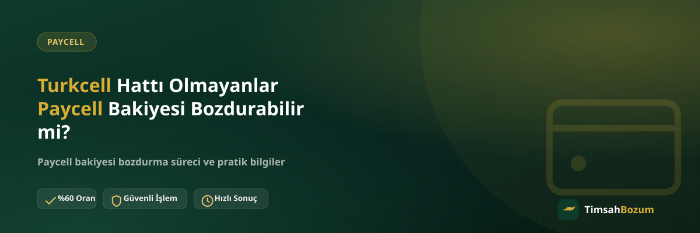

Paycell ismi Turkcell'le birlikte anıldığı için çoğu kullanıcı, bu cüzdanı sadece Turkcell hattı olanların kullanabileceğini düşünüyor. Elinde bir Paycell bakiyesi olup da farklı bir operatörün hattını kullanan ya da hiç hattı olmayan kişiler, bu bakiyeyi bozdurup bozduramayacağını sık sık soruyor. Bu yazıda Paycell'in hat bağımsız nasıl çalıştığını ve hattı olmayanlar için bozdurma sürecinin nasıl işlediğini anlatıyoruz.
Paycell Turkcell Hattına Bağlı Bir Hizmet mi?
Paycell, Turkcell'in sunduğu bir dijital cüzdan uygulaması olsa da kullanımı Turkcell hattına bağlı değil. Uygulamayı indirip hesap açtığında cüzdanına kart veya banka hesabından bakiye yükleyebiliyorsun; bu işlem için hangi operatörün hattına sahip olduğun bir şart oluşturmuyor. Dolayısıyla Vodafone, Türk Telekom hattı olan veya hiç hattı olmayan biri de Paycell hesabı açıp cüzdanında bakiye biriktirebilir.
Turkcell Hattı Olmadan Paycell Hesabı Açılır mı?
Evet, açılır. Paycell hesap açma adımları sırasında istenen bilgi kimlik ve iletişim bilgilerinle sınırlı; hat operatörünü seçmen veya Turkcell hattı sahibi olduğunu kanıtlaman istenmez. Bu yüzden farklı bir operatöre geçmiş ya da hattını kapatmış biri de eski hesabındaki bakiyeyi görmeye ve kullanmaya devam edebilir.
Paycell Bakiyesi ile Turkcell Mobil Ödeme Bakiyesi Arasındaki Fark Nedir?
Bu iki kavram burada en çok karıştırılan noktalardan biri. Turkcell mobil ödeme bakiyesi, hattına tanımlı bir harcama limitidir ve kullanıldığında faturana yansır; bu yüzden gerçekten Turkcell hattı sahibi olman gerekir. Paycell cüzdan bakiyesi ise kart veya banka hesabından yüklenen, faturayla hiçbir ilişkisi olmayan bağımsız bir bakiyedir. Bu ayrımı net şekilde ayırt etmek, hangi bakiyeyi bozdurmak istediğini WhatsApp'ta doğru belirtmene yardımcı olur.
Hattı Olmayanlar İçin Bozdurma Oranı Değişir mi?
Hayır. Bozdurma oranı, cüzdanındaki Paycell bakiyesine göre belirlenir; hattının hangi operatöre ait olduğu veya hattının olup olmaması oranı etkilemez. Güncel oran %60; yani 1.000 TL cüzdan bakiyesi için 600 TL ödeme alırsın. Oranlar piyasa koşullarına göre güncellenebilir, işlem öncesi güncel oranı WhatsApp'tan teyit etmeni öneririz.
Hangi Bilgileri Paylaşman Gerekiyor?
Hattın olup olmaması işlem için fark etmediğinden, paylaşman gereken bilgi herkes için aynı: cüzdanındaki güncel bakiyeyi gösteren okunaklı bir ekran görüntüsü. Hesaba hangi numarayla kayıt olduğunu veya operatör bilgini paylaşman gerekmiyor, çünkü bozdurduğumuz şey Paycell cüzdanının kendisi. Birden fazla hesabın varsa her birinin ekran görüntüsünü tek mesajda toplu paylaşman süreci hızlandırır.
İşlem Güvenilir mi?
Süreç herkes için aynı kurallarla işliyor: WhatsApp hattımızdan (+90 543 887 21 71) yazıyorsun, bakiyeni gösteren ekran görüntüsünü paylaşıyorsun, güncel oranı teyit ediyorsun ve onay verdiğinde WhatsApp üzerinden görüşülen yöntemle ödemen yapılıyor. Üyelik, form doldurma veya kimlik belgesi istenmiyor; cüzdanına erişim veya şifre paylaşımı da hiçbir aşamada talep edilmiyor. Hattına gelen bir SMS doğrulama kodu da senden istenmez; böyle bir talep gelirse bu bozum süreciyle ilgisi olmayan bir dolandırıcılık işaretidir, işlemi durdurup bu durumu bize bildir.
Bozdurma İşlemi Ne Kadar Sürer?
Bakiye bilgisi paylaşıldıktan ve oran onaylandıktan sonra ödeme süreci hızlıca ilerler; kesin süre işlem yoğunluğuna göre değişebileceğinden net bir rakam vermek yerine WhatsApp üzerinden güncel durumu teyit etmeni öneririz. Çalışma saatlerimiz her gün 10:00-03:00 arası; bu saatler dışında gönderdiğin mesaj kaybolmaz, hat açıldığında sırasıyla yanıtlanır.
Birden Fazla Operatörün Hattına Sahipsen Ne Olur?
Bazı kullanıcıların hem Turkcell hem başka bir operatörün hattı, hatta birden fazla Paycell hesabı olabiliyor. Bu durumda hangi hatla kayıt olduğun önemli değil; her hesabın cüzdan bakiyesi ayrı ayrı değerlendirilir ve aynı %60 oranıyla bozdurulabilir. Tek yapman gereken, hangi hesaba ait bakiyeyi bozdurmak istediğini WhatsApp'ta net şekilde belirtmek.
Operatör Değiştirdiysen Eski Paycell Hesabın Ne Olur?
Hattını Turkcell'den başka bir operatöre taşıyan ya da hattını tamamen kapatan kullanıcılarda sık görülen bir durum var: Paycell hesabı hattan bağımsız açıldığı için, hat taşınsa veya kapansa da cüzdan hesabı ve içindeki bakiye olduğu yerde kalır. Yani önceden Turkcell hattınla açtığın bir Paycell hesabın varsa, şimdi farklı bir operatörde olman bu bakiyeye erişimini etkilemez. Uygulamaya aynı giriş bilgilerinle girip cüzdanındaki bakiyeyi görmeye devam edebilirsin.
Bu durumda yapman gereken tek şey, cüzdanındaki güncel bakiyeyi bir ekran görüntüsüyle belgelemek. Hangi operatörde olduğun veya hattının aktif olup olmaması WhatsApp'ta paylaşman gereken bir bilgi değil; süreç sadece cüzdandaki tutara göre ilerliyor. Bu noktada kafa karışıklığı yaşarsan, durumunu kısaca anlatman yeterli, birlikte netleştiririz.
Hat Bilgisi Yüzünden Sık Yapılan Karışıklıklar
Bu konuda en sık rastladığımız karışıklık, kullanıcının bozdurma talebine hat operatörünü veya hat durumunu eklemeye çalışması. Örneğin "Turkcell hattım yok ama Paycell'de bakiyem var, bozdurabilir miyim?" sorusunu sorduktan sonra bir de hat bilgisi paylaşmaya çalışanlar oluyor; oysa bu bilgi işlem için gerekmiyor. Sadece cüzdanındaki bakiyeyi gösteren ekran görüntüsünü paylaşman yeterli, geri kalan detaylar süreci değiştirmiyor.
Bir diğer karışıklık, Paycell cüzdan bakiyesiyle hat üzerinden tanımlı mobil ödeme limitini aynı ekranda sanmak. Bu ikisi uygulamada farklı bölümlerde görünür; bozdurmak istediğin tutarın cüzdan bakiyesi olduğundan emin olmak, WhatsApp'ta doğru bilgiyi paylaşmanı ve işlemin ilk mesajdan itibaren hızlı ilerlemesini sağlar.
İlgili Yazılar
- Paycell Bakiyesi Bozdurmanın Güvenli Yolu
- Paycell Bakiyesi Nasıl Oluşur, Nereden Gelir?
- Turkcell Mobil Ödeme Bozdurma Artık Aktif mi?
Sonuç olarak Paycell cüzdanı, Turkcell hattına değil kendi hesabına bağlı çalışan bağımsız bir sistem. Hattın hangi operatöre ait olduğu ya da hiç hattın olmaması, cüzdanındaki bakiyeyi bozdurmanı engellemez. Hazır olduğunda WhatsApp hattımıza yazarak güncel oranı teyit edip işlemini başlatabilirsin. Paycell dışındaki hizmetlerimizi görmek istersen Paycell bozdurma sayfamıza da göz atabilirsin.